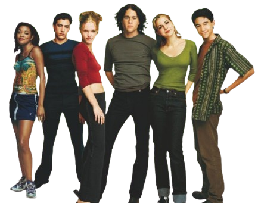
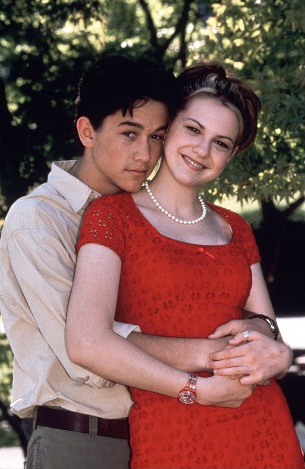

Bianca Stratford é bonita e popular, mas não pode namorar antes que sua irmã mais velha encontre um namorado primeiro. O problema é que nenhum garoto consegue chegar perto da irmã, Kat Stratford. Para resolver a situação, um rapaz interessado em Bianca suborna um amigo com passado misterioso para sair com Kat e, quem sabe, tentar conquistá-la. O romance foi lançado em 31 de Dezembro de 1999 e dirigido por Gil Junger.

